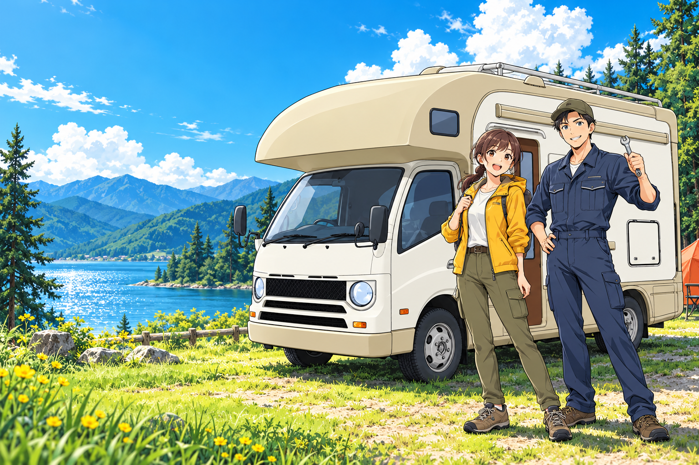

01電気、足りてる？✦
POWER & ELECTRICAL
電装・バッテリー
充電できない、電気が使えない。
電装の不調やバッテリーの更新、充電環境の見直しをご相談ください。
その相棒と、まだ見ぬ景色へ。
キャンピングカーの「困った」を、
次の「楽しみ」に。
修理も、点検も、快適にする工夫も。
旅を愛するあなたの、頼れるベースに。
海沿いを走る朝も、焚き火を囲む夜も。
キャンピングカーと過ごす時間は、特別だから。
「電気が使えない」「いつもと違う音がする」
そんな小さな不安から、まずは聞かせてください。
RV BASE Labが、相棒のこれからを一緒に考えます。
次の旅の準備は、
ここから。
キャンピングカーならではの設備から、
クルマとしての基本まで。
症状や使い方に合わせて、ご案内します。
充電できない、電気が使えない。
電装の不調やバッテリーの更新、充電環境の見直しをご相談ください。
足回りの異音や、消耗品の確認。
いつもと違うと感じたら、愛車の状態を一緒に確認しましょう。
久しぶりの出動も、長旅の前も。
気になる箇所を確認して、次のキャンプの準備を整えませんか。
※ 対応内容・費用・お預かり期間は、車両や設備の状態を確認してご案内します。

クルマも、キャンピングカービルダーで10年の経験を積んだメカニックと、自動車業界30年のパートナー。
クルマと、車内で過ごす時間の両方に目を向けます。
メカニックの
ビルダー勤務経験
パートナーの
自動車業界経験
「うまく説明できない」でも大丈夫。
写真や気になることを、そのままお聞かせください。
LINE・電話・お問い合わせページから。車種や年式、気になる症状をお知らせください。
車両や設備の状態を確認し、対応内容・費用・お預かり期間などをご案内します。
ご相談内容に合わせて整備へ。相棒とまた出かける、その一歩をお手伝いします。
はい、ご相談いただけます。車両・設備の状態を確認したうえで、対応できる内容をご案内します。まずは車種や症状をお知らせください。
症状や部品の状況によって異なるため、個別に確認してご案内します。ご旅行の予定がある場合は、あわせてお聞かせください。
持込部品の取付や、レッカー・搬送についてもご相談いただけます。部品や車両の状態、対応条件を確認しますので、事前にお問い合わせください。
小さな不調も、次の旅の計画も。
あなたのキャンピングカーの「これから」を、一緒に。
また、あの景色の先へ。
営業時間：24時間 ／ 定休日：なし
※ ご来店・対応については、事前にご相談ください。